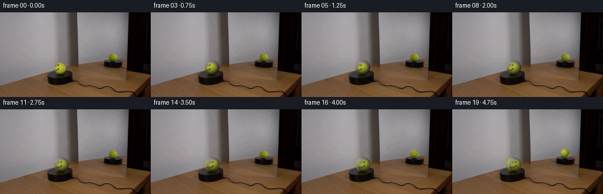
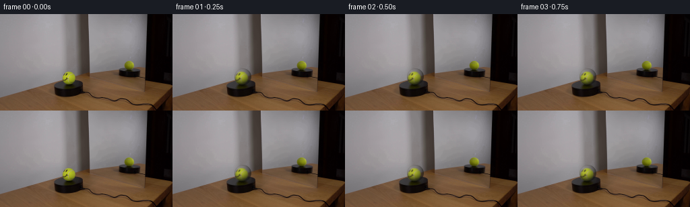
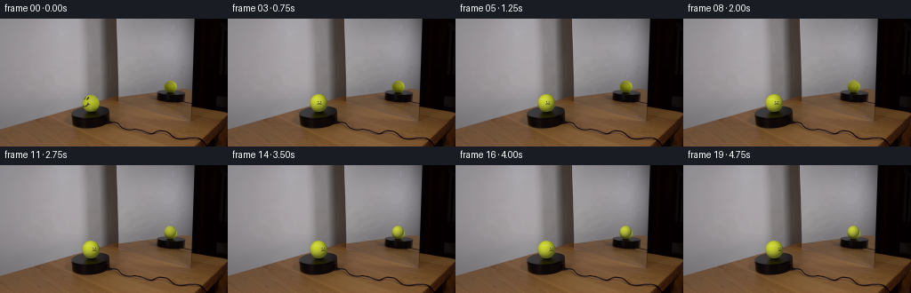
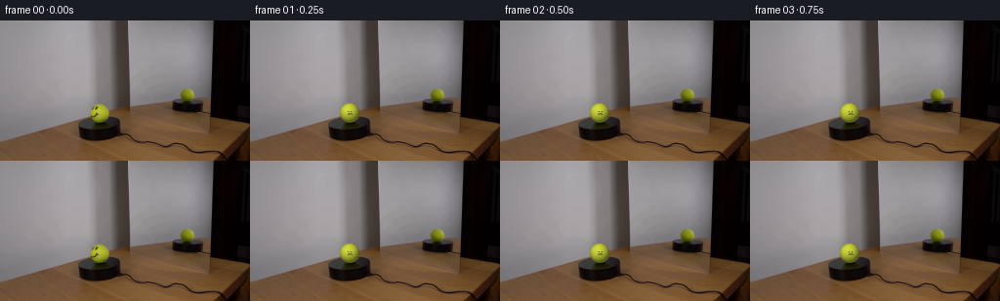

CODING AGENTS AS PIXEL WORLD MODELS
traex/DeepSeek-V4.1-Flash · 0120
点击播放 · 原生 RGB 像素
此结果可播放，但该运行尚未通过最终提交审核。页面展示不代表评测通过。
逐轮保存的候选
回放视频、检查图与代码变化。
每份候选均可单独播放。实际图片检查记录在下方工具轨迹中。
候选 01播放与检查图
点击播放 · 原生 RGB 像素


展开代码变化
--- 上一保存版本
+++ 本次保存版本
@@ -0,0 +1,197 @@
+from pathlib import Path
+
+import numpy as np
+from PIL import Image
+
+import artifact_io
+
+
+ROOT = Path(__file__).resolve().parent
+FRAME_COUNT = 20
+FPS = 4
+SUPERSAMPLE = 4
+
+
+def bilinear(image, x, y):
+ """Sample an RGB image at pixel-center coordinates."""
+ x = np.asarray(x, dtype=np.float32) - 0.5
+ y = np.asarray(y, dtype=np.float32) - 0.5
+ x0 = np.floor(x).astype(np.int32)
+ y0 = np.floor(y).astype(np.int32)
+ x1 = x0 + 1
+ y1 = y0 + 1
+ fx = (x - x0)[..., None]
+ fy = (y - y0)[..., None]
+ h, w = image.shape[:2]
+ x0 = np.clip(x0, 0, w - 1)
+ x1 = np.clip(x1, 0, w - 1)
+ y0 = np.clip(y0, 0, h - 1)
+ y1 = np.clip(y1, 0, h - 1)
+ top = image[y0, x0] * (1.0 - fx) + image[y0, x1] * fx
+ bottom = image[y1, x0] * (1.0 - fx) + image[y1, x1] * fx
+ return top * (1.0 - fy) + bottom * fy
+
+
+def smoothstep(edge0, edge1, value):
+ t = np.clip((value - edge0) / (edge1 - edge0), 0.0, 1.0)
+ return t * t * (3.0 - 2.0 * t)
+
+
+def tennis_texture(lon, lat):
+ """Procedural felt and seam for the part of the ball not seen in frame 0."""
+ # Subtle fibers keep the hidden side from looking like flat vector art.
+ grain = (
+ 0.60 * np.sin(81.0 * lon + 37.0 * lat)
+ + 0.28 * np.sin(151.0 * lon - 73.0 * lat + 0.9)
+ + 0.12 * np.sin(239.0 * lon + 117.0 * lat + 2.1)
+ )
+ fuzz = 0.45 * np.sin(8.0 * lon - 5.0 * lat)
+ warm = 2.4 * np.sin(2.0 * lon + 0.35)
+ base = np.stack(
+ (
+ 179.0 + 4.5 * grain + fuzz + warm,
+ 187.0 + 4.0 * grain + fuzz + warm,
+ 34.0 + 2.0 * grain,
+ ),
+ axis=-1,
+ )
+
+ # Two interlocking seam arcs, characteristic of a tennis ball.
+ seam_a = lat - 0.47 * np.sin(2.0 * lon + 0.25)
+ seam_b = lat + 0.47 * np.sin(2.0 * lon - 0.55)
+ seam_distance = np.minimum(np.abs(seam_a), np.abs(seam_b))
+ seam = 1.0 - smoothstep(0.026, 0.058, seam_distance)
+ seam_color = np.array([205.0, 207.0, 165.0], dtype=np.float32)
+ base = base * (1.0 - 0.72 * seam[..., None]) + seam_color * (0.72 * seam[..., None])
+ return base
+
+
+def smiley_mask(lon, lat):
+ """Marker smiley in object-space longitude/latitude coordinates."""
+ face_lon = -0.34
+ face_lat = 0.01
+ dl = lon - face_lon
+ db = lat - face_lat
+
+ # The projected face is roughly 8 pixels across on the 25-pixel ball.
+ eye_left = ((dl + 0.105) / 0.055) ** 2 + ((db - 0.105) / 0.067) ** 2
+ eye_right = ((dl - 0.105) / 0.055) ** 2 + ((db - 0.105) / 0.067) ** 2
+ eyes = np.minimum(eye_left, eye_right) < 1.0
+
+ smile_curve = db + 0.145 + 0.58 * dl * dl
+ smile = (np.abs(smile_curve) < 0.047) & (np.abs(dl) < 0.245) & (db < -0.055)
+ return eyes | smile
+
+
+def render_sphere(base, cx, cy, radius, theta, mode):
+ """Render one ball into a crop while preserving the photographic plate."""
+ margin = 3.0
+ x0 = max(0, int(np.floor(cx - radius - margin)))
+ y0 = max(0, int(np.floor(cy - radius - margin)))
+ x1 = min(base.shape[1], int(np.ceil(cx + radius + margin)) + 1)
+ y1 = min(base.shape[0], int(np.ceil(cy + radius + margin)) + 1)
+
+ width = (x1 - x0) * SUPERSAMPLE
+ height = (y1 - y0) * SUPERSAMPLE
+ xs = x0 + (np.arange(width, dtype=np.float32) + 0.5) / SUPERSAMPLE
+ ys = y0 + (np.arange(height, dtype=np.float32) + 0.5) / SUPERSAMPLE
+ xx, yy = np.meshgrid(xs, ys)
+
+ nx = (xx - cx) / radius
+ ny = (yy - cy) / radius
+ radial_sq = nx * nx + ny * ny
+ inside = radial_sq < 1.0
+ nz = np.sqrt(np.maximum(0.0, 1.0 - radial_sq))
+ lon = np.arctan2(nx, nz)
+ lat = np.arcsin(np.clip(-ny, -1.0, 1.0))
+
+ # Clockwise from above: the marker travels toward image-right.
+ object_lon = lon - theta
+
+ if mode == "main":
+ # Re-project the photographed front hemisphere. This makes the first
+ # few frames blend into the supplied plate instead of looking redrawn.
+ source_x = cx + radius * np.sin(object_lon) * np.cos(lat)
+ source_y = cy - radius * np.sin(lat)
+ sampled = bilinear(base, source_x, source_y)
+ visible_texture = np.cos(object_lon) > 0.015
+ procedural = tennis_texture(object_lon, lat)
+ edge_blend = smoothstep(-0.03, 0.13, np.cos(object_lon))
+ color = sampled * edge_blend[..., None] + procedural * (1.0 - edge_blend[..., None])
+ color = np.where(visible_texture[..., None], color, procedural)
+ front_weight = smoothstep(0.04, 0.30, np.cos(object_lon))
+ marker = smiley_mask(object_lon, lat) & ~visible_texture & (front_weight > 0.0)
+ color = np.where(marker[..., None], np.array([54.0, 49.0, 43.0]), color)
+ else:
+ # The mirror sees a different side of the same object. The offset is
+ # large enough that the smiley is absent at the start and only reaches
+ # the rim near the end of the turn.
+ mirror_object_lon = lon + 1.93 - theta
+ color = tennis_texture(mirror_object_lon, lat)
+ marker = smiley_mask(mirror_object_lon, lat)
+ color = np.where(marker[..., None], np.array([46.0, 41.0, 36.0]), color)
+
+ # Static studio shading, strongest from the upper-left.
+ light = np.array([-0.42, -0.58, 0.70], dtype=np.float32)
+ light /= np.linalg.norm(light)
+ ndotl = np.clip(nx * light[0] + ny * light[1] + nz * light[2], 0.0, 1.0)
+ ambient = 0.48
+ shade = ambient + 0.62 * ndotl
+ rim_darkening = 0.90 + 0.10 * nz
+ color *= (shade * rim_darkening)[..., None]
+
+ if mode == "main":
+ # Match the slightly desaturated, low-contrast photographic original.
+ color = 0.90 * color + 0.10 * np.array([126.0, 123.0, 112.0])
+ else:
+ color = 0.84 * color + 0.16 * np.array([116.0, 112.0, 103.0])
+
+ alpha = np.clip((radius + 0.34 - np.sqrt(radial_sq) * radius) / 0.68, 0.0, 1.0)
+ alpha = alpha * inside
+
+ patch = base[y0:y1, x0:x1]
+ patch_big = np.repeat(np.repeat(patch, SUPERSAMPLE, axis=0), SUPERSAMPLE, axis=1)
+ rendered = patch_big * (1.0 - alpha[..., None]) + color * alpha[..., None]
+ rendered = np.clip(rendered, 0.0, 255.0)
+ rendered = rendered.reshape(y1 - y0, SUPERSAMPLE, x1 - x0, SUPERSAMPLE, 3).mean(axis=(1, 3))
+
+ result = base.copy()
+ result[y0:y1, x0:x1] = np.rint(rendered).astype(np.uint8)
+ return result
+
+
+def generate_frames():
+ base = np.asarray(Image.open(ROOT / "first_frame.png").convert("RGB")).copy()
+ frames = [base.copy()]
+
+ # 44 degrees over five seconds reads as deliberate clockwise motion while
+ # remaining slow enough to track the small marker face.
+ total_rotation = np.deg2rad(44.0)
+ for index in range(1, FRAME_COUNT):
+ phase = index / (FRAME_COUNT - 1)
+ theta = total_rotation * phase
+ frame = render_sphere(base, 104.45, 93.55, 12.55, theta, "main")
+
+ # Keep the small reflection photographic for the first part of the turn,
+ # then introduce the marker as it reaches the mirror-facing rim.
+ reflection_weight = smoothstep(0.72, 1.0, phase)
+ if reflection_weight > 0.0:
+ reflected = render_sphere(frame, 191.35, 74.25, 7.25, theta, "mirror")
+ frame = np.rint(
+ frame * (1.0 - reflection_weight) + reflected * reflection_weight
+ ).astype(np.uint8)
+ frames.append(frame)
+
+ return np.stack(frames, axis=0)
+
+
+def main():
+ frames = generate_frames()
+ assert frames.shape == (20, 144, 256, 3)
+ assert frames.dtype == np.uint8
+ assert np.array_equal(frames[0], np.asarray(Image.open(ROOT / "first_frame.png").convert("RGB")))
+ artifact_io.save(frames, ROOT)
+
+
+if __name__ == "__main__":
+ main()
候选 02播放与检查图
点击播放 · 原生 RGB 像素


展开代码变化
--- 上一保存版本
+++ 本次保存版本
@@ -9,7 +9,7 @@
ROOT = Path(__file__).resolve().parent
FRAME_COUNT = 20
FPS = 4
-SUPERSAMPLE = 4
+SUPERSAMPLE = 8
def bilinear(image, x, y):
@@ -41,45 +41,45 @@
"""Procedural felt and seam for the part of the ball not seen in frame 0."""
# Subtle fibers keep the hidden side from looking like flat vector art.
grain = (
- 0.60 * np.sin(81.0 * lon + 37.0 * lat)
- + 0.28 * np.sin(151.0 * lon - 73.0 * lat + 0.9)
- + 0.12 * np.sin(239.0 * lon + 117.0 * lat + 2.1)
+ 0.52 * np.sin(23.0 * lon + 19.0 * lat)
+ + 0.30 * np.sin(41.0 * lon - 29.0 * lat + 0.9)
+ + 0.18 * np.sin(67.0 * lon + 43.0 * lat + 2.1)
)
- fuzz = 0.45 * np.sin(8.0 * lon - 5.0 * lat)
- warm = 2.4 * np.sin(2.0 * lon + 0.35)
+ fuzz = 0.65 * np.sin(4.0 * lon - 3.0 * lat)
+ warm = 1.8 * np.sin(2.0 * lon + 0.35)
base = np.stack(
(
- 179.0 + 4.5 * grain + fuzz + warm,
- 187.0 + 4.0 * grain + fuzz + warm,
- 34.0 + 2.0 * grain,
+ 190.0 + 2.4 * grain + fuzz + warm,
+ 199.0 + 2.2 * grain + fuzz + warm,
+ 43.0 + 1.2 * grain,
),
axis=-1,
)
# Two interlocking seam arcs, characteristic of a tennis ball.
- seam_a = lat - 0.47 * np.sin(2.0 * lon + 0.25)
- seam_b = lat + 0.47 * np.sin(2.0 * lon - 0.55)
+ seam_a = lat - 0.47 * np.sin(1.15 * lon + 0.25)
+ seam_b = lat + 0.47 * np.sin(1.15 * lon - 0.55)
seam_distance = np.minimum(np.abs(seam_a), np.abs(seam_b))
- seam = 1.0 - smoothstep(0.026, 0.058, seam_distance)
- seam_color = np.array([205.0, 207.0, 165.0], dtype=np.float32)
- base = base * (1.0 - 0.72 * seam[..., None]) + seam_color * (0.72 * seam[..., None])
+ seam = 1.0 - smoothstep(0.020, 0.044, seam_distance)
+ seam_color = np.array([204.0, 207.0, 158.0], dtype=np.float32)
+ base = base * (1.0 - 0.38 * seam[..., None]) + seam_color * (0.38 * seam[..., None])
return base
def smiley_mask(lon, lat):
"""Marker smiley in object-space longitude/latitude coordinates."""
- face_lon = -0.34
- face_lat = 0.01
+ face_lon = -0.03
+ face_lat = 0.02
dl = lon - face_lon
db = lat - face_lat
# The projected face is roughly 8 pixels across on the 25-pixel ball.
- eye_left = ((dl + 0.105) / 0.055) ** 2 + ((db - 0.105) / 0.067) ** 2
- eye_right = ((dl - 0.105) / 0.055) ** 2 + ((db - 0.105) / 0.067) ** 2
+ eye_left = ((dl + 0.145) / 0.057) ** 2 + ((db - 0.105) / 0.067) ** 2
+ eye_right = ((dl - 0.145) / 0.057) ** 2 + ((db - 0.105) / 0.067) ** 2
eyes = np.minimum(eye_left, eye_right) < 1.0
- smile_curve = db + 0.145 + 0.58 * dl * dl
- smile = (np.abs(smile_curve) < 0.047) & (np.abs(dl) < 0.245) & (db < -0.055)
+ smile_curve = db + 0.125 + 0.72 * dl * dl
+ smile = (np.abs(smile_curve) < 0.047) & (np.abs(dl) < 0.255) & (db < -0.035)
return eyes | smile
@@ -109,44 +109,32 @@
object_lon = lon - theta
if mode == "main":
- # Re-project the photographed front hemisphere. This makes the first
- # few frames blend into the supplied plate instead of looking redrawn.
- source_x = cx + radius * np.sin(object_lon) * np.cos(lat)
- source_y = cy - radius * np.sin(lat)
- sampled = bilinear(base, source_x, source_y)
- visible_texture = np.cos(object_lon) > 0.015
- procedural = tennis_texture(object_lon, lat)
- edge_blend = smoothstep(-0.03, 0.13, np.cos(object_lon))
- color = sampled * edge_blend[..., None] + procedural * (1.0 - edge_blend[..., None])
- color = np.where(visible_texture[..., None], color, procedural)
- front_weight = smoothstep(0.04, 0.30, np.cos(object_lon))
- marker = smiley_mask(object_lon, lat) & ~visible_texture & (front_weight > 0.0)
- color = np.where(marker[..., None], np.array([54.0, 49.0, 43.0]), color)
+ color = tennis_texture(object_lon, lat)
+ marker = smiley_mask(object_lon, lat)
+ color = np.where(marker[..., None], np.array([55.0, 50.0, 43.0]), color)
else:
# The mirror sees a different side of the same object. The offset is
# large enough that the smiley is absent at the start and only reaches
# the rim near the end of the turn.
- mirror_object_lon = lon + 1.93 - theta
+ mirror_object_lon = lon + 2.10 - theta
color = tennis_texture(mirror_object_lon, lat)
- marker = smiley_mask(mirror_object_lon, lat)
- color = np.where(marker[..., None], np.array([46.0, 41.0, 36.0]), color)
# Static studio shading, strongest from the upper-left.
- light = np.array([-0.42, -0.58, 0.70], dtype=np.float32)
+ light = np.array([-0.34, -0.50, 0.80], dtype=np.float32)
light /= np.linalg.norm(light)
ndotl = np.clip(nx * light[0] + ny * light[1] + nz * light[2], 0.0, 1.0)
- ambient = 0.48
- shade = ambient + 0.62 * ndotl
- rim_darkening = 0.90 + 0.10 * nz
+ ambient = 0.47
+ shade = ambient + 0.67 * ndotl
+ rim_darkening = 0.91 + 0.09 * nz
color *= (shade * rim_darkening)[..., None]
if mode == "main":
# Match the slightly desaturated, low-contrast photographic original.
- color = 0.90 * color + 0.10 * np.array([126.0, 123.0, 112.0])
+ color = 0.94 * color + 0.06 * np.array([132.0, 129.0, 117.0])
else:
color = 0.84 * color + 0.16 * np.array([116.0, 112.0, 103.0])
- alpha = np.clip((radius + 0.34 - np.sqrt(radial_sq) * radius) / 0.68, 0.0, 1.0)
+ alpha = np.clip((radius + 0.22 - np.sqrt(radial_sq) * radius) / 0.46, 0.0, 1.0)
alpha = alpha * inside
patch = base[y0:y1, x0:x1]
@@ -170,13 +158,13 @@
for index in range(1, FRAME_COUNT):
phase = index / (FRAME_COUNT - 1)
theta = total_rotation * phase
- frame = render_sphere(base, 104.45, 93.55, 12.55, theta, "main")
+ frame = render_sphere(base, 102.25, 94.85, 9.90, theta, "main")
# Keep the small reflection photographic for the first part of the turn,
# then introduce the marker as it reaches the mirror-facing rim.
- reflection_weight = smoothstep(0.72, 1.0, phase)
+ reflection_weight = smoothstep(0.30, 0.72, phase)
if reflection_weight > 0.0:
- reflected = render_sphere(frame, 191.35, 74.25, 7.25, theta, "mirror")
+ reflected = render_sphere(frame, 191.45, 74.85, 6.65, theta, "mirror")
frame = np.rint(
frame * (1.0 - reflection_weight) + reflected * reflection_weight
).astype(np.uint8)
可观测工具轨迹
实际执行的命令与返回图片。
命令 1exit 0
/bin/bash -c "pwd && rg --files -g '"'!*.git*'"' | sed -n '1,160p'"
命令 2exit 0
/bin/bash -c "sed -n '1,240p' prompt.txt"
命令 3exit 0
/bin/bash -c "sed -n '1,280p' GENERATION_RULES.md"
命令 4exit 0
/bin/bash -c "find . -maxdepth 3 -type f -printf '%p %s bytes\\n' | sort | sed -n '1,200p'"
命令 5exit 0
/bin/bash -c "sed -n '1,260p' artifact_io.py"
命令 6exit 0
/bin/bash -c "sed -n '1,260p' player_template.html"
命令 7exit 0
/bin/bash -c "python - <<'PY'
from PIL import Image
im=Image.open('first_frame.png')
print(im.mode, im.size)
print(im.getpixel((0,0)), im.getpixel((128,72)))
PY"命令 8exit 0
/bin/bash -c "python - <<'PY'
from PIL import Image
im=Image.open('first_frame.png')
for name,box,scale in [('ball',(75,65,130,125),6),('mirror',(165,55,225,100),6),('scene',(0,0,256,144),3)]:
im.crop(box).resize(((box[2]-box[0])*scale,(box[3]-box[1])*scale)).save('.tmp/'+name+'.png')
PY"命令 9exit 0
/bin/bash -c "python - <<'PY'
from PIL import Image
import numpy as np
im=np.asarray(Image.open('first_frame.png'))
# list dark yellow face mask within ball crop
for y in range(78,108):
s=''
for x in range(88,123):
r,g,b=im[y,x]
if r>90 and g>90 and b<80 and (r+g)>2*b+20: c='.' # yellow
elif max(r,g,b)<70: c='#'
elif r>100 and g>100: c='+'
else: c=' '
s+=c
print(f'{y:3} {s}')
PY"命令 10exit 0
/bin/bash -c "python - <<'PY'
import numpy as np
from PIL import Image
im=np.asarray(Image.open('first_frame.png')).astype(int)
for y in [70,72,75,78,80,82,84,86,88,90,92,94,96,98,100,102,104,106,108,110,112,114]:
# sample yellow-ish/high brightness runs
row=im[y]
sat=row.max(1)-row.min(1)
m=(row[:,1]>50)&(sat>15)
runs=[]; st=None
for i,v in enumerate(m):
if v and st is None:st=i
if st is not None and (not v or i==255):
en=i if not v else 256
if en-st>=2:runs.append((st,en))
st=None
print(y,runs)
PY"命令 11exit 0
/bin/bash -c "python - <<'PY'
from PIL import Image
import numpy as np
im=np.asarray(Image.open('first_frame.png'))
for y in range(76,108):
s=''
for x in range(86,126):
r,g,b=map(int,im[y,x]); lum=(r+g+b)/3
if r>g+12 and g>b+25: c='Y'
elif lum<42:c='#'
elif lum<75:c='d'
elif lum<110:c='m'
else:c='.'
s+=c
print(f'{y:3} {s}')
PY"命令 12exit 0
/bin/bash -c "python - <<'PY'
from PIL import Image
im=Image.open('first_frame.png')
# nearest and lanczos larger comparison crops
for method in [Image.Resampling.NEAREST, Image.Resampling.LANCZOS]:
im.crop((70,60,140,130)).resize((560,560),method).save('.tmp/ball_'+method.name.lower()+'.png')
PY"命令 13exit 0
/bin/bash -c "python - <<'PY'
from PIL import Image
import numpy as np
im=np.asarray(Image.open('first_frame.png')).astype(float)
for cx,cy,r in [(106,92,12),(193,74,9)]:
y,x=np.ogrid[:144,:256]; m=(x-cx)**2+(y-cy)**2<=r*r
p=im[m]
print((cx,cy,r),'n',len(p),'mean',p.mean(0),'min',p.min(0),'max',p.max(0),'p10',np.percentile(p,10,axis=0),'p50',np.percentile(p,50,axis=0),'p90',np.percentile(p,90,axis=0))
# samples in face/ball
for pt in [(106,92),(106,88),(110,93),(100,93),(102,98),(111,98),(106,84),(106,101),(193,74),(190,71),(196,76),(193,80)]:
print(pt,im[pt[1],pt[0]].astype(int))
PY"命令 14exit 0
/bin/bash -c "python - <<'PY'
from PIL import Image
import numpy as np
im=np.asarray(Image.open('first_frame.png')).astype(float)
# estimate background with median filter? print selected colors around scene
for pt in [(10,10),(100,20),(130,20),(140,50),(20,60),(140,90),(150,30),(220,10),(180,20),(170,60),(220,70),(100,110),(200,110),(240,110),(30,130),(100,130),(200,130),(240,130),(100,80),(120,75),(180,95),(120,95)]:
x,y=pt; print(pt,im[y,x].astype(int))
PY"命令 15exit 0
/bin/bash -c "python - <<'PY'
from PIL import Image
im=Image.open('first_frame.png')
im.crop((180,62,207,87)).resize((540,500),Image.Resampling.NEAREST).save('.tmp/mirror_ball.png')
PY"命令 16exit 0
/bin/bash -c "python - <<'PY'
from PIL import Image
im=Image.open('first_frame.png')
for box,name in [((75,80,135,120),'ball2'),((100,65,122,88),'ball_top'),((130,75,190,108),'stand')]:
im.crop(box).resize(((box[2]-box[0])*12,(box[3]-box[1])*12),Image.Resampling.NEAREST).save('.tmp/'+name+'.png')
PY"命令 17exit 0
/bin/bash -c "python - <<'PY'
from PIL import Image
import numpy as np
im=np.asarray(Image.open('first_frame.png'))
# inspect dark pedestal extents at rows
for y in range(84,119):
row=im[y]
m=(row.max(1)<80)
runs=[]; st=None
for x,v in enumerate(m):
if v and st is None:st=x
if st is not None and (not v or x==255):
en=x if not v else 256
if en-st>=2:runs.append((st,en))
st=None
print(y,runs)
PY"命令 18exit 0
/bin/bash -c "python - <<'PY'
from PIL import Image
import numpy as np
im=np.asarray(Image.open('first_frame.png')).astype(int)
# classify ball region around crop using color; print color chars and exact rows
for y in range(74,109):
s=''
for x in range(88,128):
r,g,b=im[y,x]; mx=max(r,g,b); mn=min(r,g,b)
if r>g+8 and g>b+22: c='Y' # yellow
elif mx<45:c='#'
elif mx<80:c='D'
elif mx<115:c='d'
elif mx<145:c='m'
elif mx<175:c='.'
else:c=' '
s+=c
print(f'{y:3} {s}')
PY"命令 19exit 0
/bin/bash -c "python - <<'PY'
from PIL import Image
im=Image.open('first_frame.png')
for box,name in [((80,80,126,108),'face'),((90,72,122,106),'ballcore'),((180,60,208,90),'mirrorball'),((115,60,145,125),'wallcorner'),((120,75,185,115),'glass')]:
im.crop(box).resize(((box[2]-box[0])*16,(box[3]-box[1])*16),Image.Resampling.LANCZOS).save('.tmp/'+name+'_smooth.png')
PY"命令 20exit 0
/bin/bash -c "python - <<'PY'
import numpy as np
from PIL import Image
im=np.asarray(Image.open('first_frame.png')).astype(np.float32)
# Estimate actual sphere center/radius by foreground color in likely crop, fit bounding box where saturation yellow
for y in range(74,109):
xs=[]
for x in range(80,130):
r,g,b=im[y,x]
if r>85 and g>85 and b<90 and r+g>2*b+20: xs.append(x)
if xs: print(y,min(xs),max(xs),len(xs))
PY"命令 21exit 0
/bin/bash -c "python - <<'PY'
from PIL import Image
im=Image.open('first_frame.png')
for box,name in [((82,84,124,105),'mouth'),((88,82,119,105),'face2'),((72,78,132,110),'ballwide')]:
im.crop(box).resize(((box[2]-box[0])*24,(box[3]-box[1])*24),Image.Resampling.LANCZOS).save('.tmp/'+name+'.png')
PY"命令 22exit 0
/bin/bash -c "python - <<'PY'
from PIL import Image
import numpy as np
im=np.asarray(Image.open('first_frame.png')).astype(float)
# print detailed HSV-ish values for face region rows 87-101 every pixel, chars based on hue/dark
for y in range(84,103):
s=''
for x in range(90,120):
r,g,b=im[y,x]
if r>g+5 and g>b+25:
c='Y'
elif max(r,g,b)<50:
c='#'
elif max(r,g,b)<85:
c='D'
elif max(r,g,b)<115:
c='d'
elif max(r,g,b)<145:
c='m'
else:
c='.'
s+=c
print(f'{y:3} {s}')
PY"命令 23exit 0
/bin/bash -c "python - <<'PY'
from PIL import Image
import numpy as np
im=np.asarray(Image.open('first_frame.png')).astype(int)
# char map 75:112 x 85:126, threshold chroma
for y in range(74,112):
s=''
for x in range(82,130):
r,g,b=im[y,x]; chroma=g-b
if chroma>35 and g>80: c='O' if b<50 else 'o'
elif chroma>18 and g>50:c='+'
elif max(r,g,b)<40:c='#'
elif max(r,g,b)<70:c='D'
elif max(r,g,b)<105:c='d'
elif max(r,g,b)<140:c='m'
else:c='.'
s+=c
print(f'{y:3} {s}')
PY"命令 24exit 0
/bin/bash -c "python - <<'PY'
from PIL import Image
im=Image.open('first_frame.png')
im.crop((0,0,256,144)).resize((1024,576),Image.Resampling.NEAREST).save('.tmp/full_nearest.png')
PY"命令 25exit 0
/bin/bash -c "python - <<'PY'
import numpy as np
from PIL import Image
im=np.asarray(Image.open('first_frame.png')).astype(np.float32)
# edge runs of foreground ball based on chroma / local difference from vertical-ish bg, row by row
for y in range(78,108):
s=[]
for x in range(80,126):
r,g,b=im[y,x]
if g-b>25 and g>60: s.append(x)
if s:print(y,min(s),max(s),len(s))
PY"命令 26exit 0
/bin/bash -c "python - <<'PY'
import numpy as np
from PIL import Image
im=np.asarray(Image.open('first_frame.png')).astype(np.float32)
# exact selected color ranges for original ball excluding foreground? print grid 4px
for y in range(82,104,2):
print('y',y)
for x in range(92,122,2):
print(f'{x}:{tuple(im[y,x].astype(int))}',end=' ')
print()
PY"命令 27exit 0
/bin/bash -c "python - <<'PY' mods=['numpy','PIL','scipy','cv2','imageio','matplotlib'] for m in mods: try: mod=__import__(m) print(m,'ok',getattr(mod,'__version__','')) except Exception as e:print(m,'missing',e) PY"
命令 28exit 0
/bin/bash -c "python - <<'PY'
import cv2, numpy as np
from PIL import Image
im=np.asarray(Image.open('first_frame.png')).astype(np.float32)
# fit ellipse via threshold in HSV around ball crop
crop=im[70:110,80:130]
hsv=cv2.cvtColor(crop.astype(np.uint8),cv2.COLOR_RGB2HSV)
for hlo,hhi in [(20,45),(25,40),(20,35),(15,45)]:
m=((hsv[:,:,0]>=hlo)&(hsv[:,:,0]<=hhi)&(hsv[:,:,1]>80)&(hsv[:,:,2]>70)).astype(np.uint8)*255
m=cv2.morphologyEx(m,cv2.MORPH_CLOSE,np.ones((3,3),np.uint8))
cnts,_=cv2.findContours(m,cv2.RETR_EXTERNAL,cv2.CHAIN_APPROX_SIMPLE)
print(hlo,hhi,[(cv2.contourArea(c),cv2.boundingRect(c)) for c in cnts])
PY"命令 29exit 0
/bin/bash -c "python - <<'PY'
from PIL import Image
import numpy as np
im=np.asarray(Image.open('first_frame.png')).astype(float)
# Print RGB plus yellow mask region 90-120 x 84-104
for y in range(84,104):
s=''
for x in range(90,122):
r,g,b=im[y,x]
if g-b>35 and g>100:c='@'
elif g-b>20 and g>60:c='O'
elif g-b>10:c='+'
elif max(r,g,b)<50:c='#'
elif max(r,g,b)<80:c='D'
elif max(r,g,b)<110:c='d'
elif max(r,g,b)<140:c='m'
else:c='.'
s+=c
print(f'{y:3} {s}')
PY"命令 30exit 0
/bin/bash -c "python - <<'PY'
from PIL import Image
im=Image.open('first_frame.png')
# extract left and right ball closeups
for box,name in [((90,84,116,102),'facedetail'),((90,78,116,106),'facedetail2'),((94,80,114,104),'facedetail3')]:
im.crop(box).resize(((box[2]-box[0])*30,(box[3]-box[1])*30),Image.Resampling.NEAREST).save('.tmp/'+name+'.png')
PY"命令 31exit 0
/bin/bash -c "python - <<'PY'
import numpy as np, cv2
from PIL import Image
im=np.asarray(Image.open('first_frame.png'))
y,x=np.mgrid[:144,:256]
inside=((x-106.0)/13.3)**2+((y-92.0)/13.3)**2<1
# only face/decal ROI, dark pixels relative to base
roi=inside & (x>=93)&(x<=111)&(y>=85)&(y<=101)
lum=im.max(2)
for th in [70,85,100,115,130]:
m=(roi&(lum<th)).astype(np.uint8)*255
Image.fromarray(m).resize((1024,576),Image.Resampling.NEAREST).save(f'.tmp/mask_{th}.png')
clean=cv2.inpaint(im,m,3,cv2.INPAINT_TELEA)
Image.fromarray(clean).save(f'.tmp/clean_{th}.png')
print(th,m.sum()//255)
PY"命令 32exit 0
/bin/bash -c "python - <<'PY'
from PIL import Image
im=Image.open('first_frame.png')
for box,name in [((85,80,130,110),'ballmask'),((92,85,120,105),'facesmall'),((100,75,120,95),'topball')]:
im.crop(box).resize(((box[2]-box[0])*32,(box[3]-box[1])*32),Image.Resampling.NEAREST).save('.tmp/'+name+'.png')
PY"命令 33exit 0
/bin/bash -c "python - <<'PY'
from PIL import Image
import numpy as np
im=np.asarray(Image.open('first_frame.png')).astype(np.float32)
# ball chromatic segmentation
r,g,b=im[:,:,0],im[:,:,1],im[:,:,2]
yellow=(g-b>28)&(r>75)&(g>70)
# print rows extents and gaps x=70:140
for y in range(76,108):
xs=np.flatnonzero(yellow[y,70:140])+70
if len(xs):print(y,xs.min(),xs.max(),len(xs),xs.tolist())
PY"命令 34exit 0
/bin/bash -c "python - <<'PY'
from PIL import Image
im=Image.open('first_frame.png')
im.crop((0,0,256,144)).resize((1280,720),Image.Resampling.LANCZOS).save('.tmp/full_lanczos.png')
PY"命令 35exit 0
/bin/bash -c "python - <<'PY'
from PIL import Image
import numpy as np
im=np.asarray(Image.open('first_frame.png'))
# get unique-ish colors and clusters around ball
from sklearn.cluster import KMeans
PY"命令 36exit 0
/bin/bash -c "python - <<'PY'
from PIL import Image
import numpy as np
im=np.asarray(Image.open('first_frame.png'))
# Print ball region in six hex values for mask visualization
for y in range(84,104):
print(f'{y:3}', ' '.join('#%02x%02x%02x'%tuple(im[y,x]) for x in range(94,112)))
PY"命令 37exit 0
/bin/bash -c "python - <<'PY'
import numpy as np
from PIL import Image
im=np.asarray(Image.open('first_frame.png')).astype(float)
for y in range(86,103):
vals=[]
for x in range(93,112):
r,g,b=im[y,x]
# normalize max; print color differences
vals.append(int(g-b))
print(y,vals)
PY"命令 38exit 0
/bin/bash -c "python - <<'PY'
from PIL import Image
import numpy as np
im=np.asarray(Image.open('first_frame.png')).astype(float)
# Ball center/radius fit to yellow chromatic mask excluding facial low chroma by comparing extent
for cy in [91,91.5,92,92.5,93]:
for r in [12,12.5,13,13.5,14]:
y,x=np.mgrid[:144,:256]
m=((x-106.0)**2+(y-cy)**2<r*r)
chrom=im[:,:,1]-im[:,:,2]
# compare mask only where no facial areas? calculate fraction high chrom
score=(chrom[m]>20).mean()
print(cy,r,round(score,3),end='; ')
print()
PY"命令 39exit 0
/bin/bash -c "python - <<'PY'
from PIL import Image
import numpy as np
im=np.asarray(Image.open('first_frame.png')).astype(float)
# calculate edge based on second derivatives around expected center; fit circle to strongest color transition pixels
Y,X=np.mgrid[:144,:256]
# samples of ball's high chroma region, fit circle to outer boundary from convex hull
m=((im[:,:,1]-im[:,:,2]>20)&(X>85)&(X<130)&(Y>75)&(Y<110)).astype(np.uint8)
import cv2
cs,_=cv2.findContours(m,cv2.RETR_EXTERNAL,cv2.CHAIN_APPROX_NONE)
for c in sorted(cs,key=cv2.contourArea,reverse=True)[:5]:
(cx,cy),rad=cv2.minEnclosingCircle(c);print(cv2.contourArea(c),(cx,cy),rad)
PY"命令 40exit 0
/bin/bash -c "python - <<'PY'
import numpy as np
from PIL import Image
im=np.asarray(Image.open('first_frame.png')).astype(float)
# Print regions around mirror ball / other object exactly at 3x maybe create image with coords grid? use text rows binary chromatic
for y in range(64,86):
s=''
for x in range(178,210):
r,g,b=im[y,x]
if g-b>25 and g>65:c='@'
elif g-b>15 and g>50:c='o'
elif max(r,g,b)<35:c='#'
elif max(r,g,b)<60:c='D'
elif max(r,g,b)<90:c='d'
elif max(r,g,b)<120:c='m'
else:c='.'
s+=c
print(f'{y:3} {s}')
PY"命令 41exit 0
/bin/bash -c "python - <<'PY'
from PIL import Image
im=Image.open('first_frame.png')
for box,name in [((180,66,204,84),'mball'),((180,65,210,90),'mball2'),((177,60,213,95),'mballwide')]:
im.crop(box).resize(((box[2]-box[0])*32,(box[3]-box[1])*32),Image.Resampling.NEAREST).save('.tmp/'+name+'.png')
PY"命令 42exit 0
/bin/bash -c "python - <<'PY'
import numpy as np
from PIL import Image
im=np.asarray(Image.open('first_frame.png'))
# Fit circles to yellow chromatic mirror ball contour
import cv2
Y,X=np.mgrid[:144,:256]
m=((im[:,:,1].astype(int)-im[:,:,2].astype(int)>35)&(X>175)&(X<210)&(Y>60)&(Y<90)).astype(np.uint8)
cs,_=cv2.findContours(m,cv2.RETR_EXTERNAL,cv2.CHAIN_APPROX_NONE)
for c in sorted(cs,key=cv2.contourArea,reverse=True)[:3]:
print(cv2.contourArea(c),cv2.minEnclosingCircle(c),cv2.boundingRect(c))
PY"命令 43exit 0
/bin/bash -c "python - <<'PY'
from PIL import Image
im=Image.open('first_frame.png')
for box,name in [((70,82,120,110),'main_ball_nearest'),((94,84,116,103),'decal_nearest'),((180,68,204,85),'ref_ball_nearest')]:
im.crop(box).resize(((box[2]-box[0])*40,(box[3]-box[1])*40),Image.Resampling.NEAREST).save('.tmp/'+name+'.png')
PY"命令 44exit 0
/bin/bash -c "python - <<'PY'
from PIL import Image
im=Image.open('first_frame.png')
# Create high contrast and edge images around ball
im.crop((80,74,125,108)).resize((900,680),Image.Resampling.NEAREST).save('.tmp/ball_big_nearest.png')
PY"命令 45exit 0
/bin/bash -c "python - <<'PY'
from PIL import Image
im=Image.open('first_frame.png')
# gamma/high contrast visualization for ball
import numpy as np
c=np.asarray(im.crop((80,74,125,108))).astype(float)/255
for gam in [0.6,1.5]:
out=(np.clip(c,0,1)**gam*255).astype('uint8')
Image.fromarray(out).resize((900,680),Image.Resampling.NEAREST).save(f'.tmp/ball_g{gam}.png')
PY"命令 46exit 0
/bin/bash -c "python - <<'PY'
from PIL import Image
im=Image.open('first_frame.png')
# zoom 4 pixels around face colors only with no nearest smoothing? save exact patch png
im.crop((92,84,118,105)).save('.tmp/facepatch.png')
PY"命令 47exit 0
/bin/bash -c "python - <<'PY'
from PIL import Image
import numpy as np
im=np.asarray(Image.open('first_frame.png')).astype(float)
# print edge contour by color threshold around ball, exact coordinates each row
for y in range(84,105):
vals=[]
for x in range(85,128):
r,g,b=im[y,x]
if g-b>10 and g>60: vals.append(x)
if vals: print(y,min(vals),max(vals))
PY"命令 48exit 0
/bin/bash -c "python - <<'PY'
import numpy as np
from PIL import Image
im=np.asarray(Image.open('first_frame.png')).astype(float)
# In ball crop, inspect color gradients and local pixel differences to detect ball boundary
# Make crop with rows/cols labeled as html-ish via matplotlib maybe no need
for y in range(82,106):
print(f'{y:3}', ' '.join(f'{int(im[y,x,1]-im[y,x,2]):3d}' for x in range(88,122)))
PY"命令 49exit 0
/bin/bash -c "python - <<'PY'
from PIL import Image
im=Image.open('first_frame.png')
im.crop((0,0,256,144)).save('.tmp/base_copy.png')
print(im.getbbox())
PY"命令 50exit 0
/bin/bash -c "python - <<'PY'
from PIL import Image
im=Image.open('first_frame.png')
# render nearest with grid lines and coordinates? matplotlib annotate around ball
import matplotlib.pyplot as plt
import numpy as np
arr=np.asarray(im)
fig,ax=plt.subplots(figsize=(12,8),dpi=100)
ax.imshow(arr[70:112,75:135],interpolation='nearest')
ax.set_xticks(np.arange(0,60,2));ax.set_yticks(np.arange(0,42,2));
ax.set_xticklabels(np.arange(75,135,2));ax.set_yticklabels(np.arange(70,112,2))
ax.grid(color='white',alpha=.25,lw=.5)
fig.tight_layout();fig.savefig('.tmp/ball_grid.png');plt.close(fig)
PY"命令 51exit 0
/bin/bash -c "python - <<'PY'
from PIL import Image
import numpy as np
im=np.asarray(Image.open('first_frame.png')).astype(float)
# find ball mask by threshold chroma, close holes, find contours, fit circle to outer boundary
import cv2
chrom=im[:,:,1]-im[:,:,2]
for th in [5,10,15,20,25,30]:
m=(chrom>th).astype(np.uint8)*255
m[:78]=0;m[106:]=0;m[:,:90]=0;m[:,118:]=0
cnts,_=cv2.findContours(m,cv2.RETR_EXTERNAL,cv2.CHAIN_APPROX_SIMPLE)
if cnts:
c=max(cnts,key=cv2.contourArea)
print(th,cv2.contourArea(c),cv2.minEnclosingCircle(c),cv2.boundingRect(c))
PY"命令 52exit 0
/bin/bash -c "python - <<'PY'
import numpy as np
from PIL import Image
im=np.asarray(Image.open('first_frame.png')).astype(float)
# Map only ball crop but classify each pixel as image-like hues. use hue
import cv2
hsv=cv2.cvtColor(im.astype(np.uint8),cv2.COLOR_RGB2HSV)
for y in range(80,108):
s=''
for x in range(85,132):
h,ss,v=hsv[y,x]
if ss>120 and h>20 and h<45: c='Y'
elif ss>60 and h>20 and h<45:c='y'
elif ss>30 and h>20 and h<50:c='+'
elif v<35:c='#'
elif v<65:c='D'
elif v<95:c='d'
elif v<125:c='m'
else:c='.'
s+=c
print(f'{y:3} {s}')
PY"命令 53exit 0
/bin/bash -c "python - <<'PY'
from PIL import Image
im=Image.open('first_frame.png')
# make exact patch around ball 3x with no labels
im.crop((75,75,135,115)).resize((1200,800),Image.Resampling.NEAREST).save('.tmp/ball75.png')
PY"命令 54exit 0
/bin/bash -c "python - <<'PY'
from PIL import Image
im=Image.open('first_frame.png')
# high quality crops for scene understanding
for box,name in [((140,0,256,144),'right'),((0,0,140,144),'left'),((65,70,140,115),'ballzone')]:
im.crop(box).resize(((box[2]-box[0])*6,(box[3]-box[1])*6),Image.Resampling.LANCZOS).save('.tmp/'+name+'_6x.png')
PY"命令 55exit 0
/bin/bash -c "python - <<'PY'
from PIL import Image
import numpy as np
im=np.asarray(Image.open('first_frame.png')).astype(float)
# inspect ball region with edge enhanced contrast
import cv2
c=im[75:110,80:130].astype(np.float32)
# laplacian / unsharp
lab=cv2.cvtColor(c.astype(np.uint8),cv2.COLOR_RGB2LAB)
labf=lab.astype(float)
# local contrast CLAHE
lab8=lab.copy(); lab8[:,:,0]=cv2.createCLAHE(clipLimit=2.0,tileGridSize=(4,4)).apply(lab8[:,:,0])
out=cv2.cvtColor(lab8,cv2.COLOR_LAB2RGB)
Image.fromarray(out).resize((1000,700),Image.Resampling.NEAREST).save('.tmp/ball_contrast.png')
PY"命令 56exit 0
/bin/bash -c "python - <<'PY'
from PIL import Image
import numpy as np
im=np.asarray(Image.open('first_frame.png'))
# list pixels around decal as ascii, color with characters: yellow normal, dark, gray
for y in range(86,102):
s=''
for x in range(94,113):
r,g,b=map(int,im[y,x]); d=g-b
if d>100:c='A'
elif d>60:c='B'
elif d>25:c='C'
elif d>10:c='D'
elif max(r,g,b)<50:c='#'
elif max(r,g,b)<90:c='x'
elif max(r,g,b)<120:c='o'
else:c='.'
s+=c
print(f'{y:3} {s}')
PY"命令 57exit 0
/bin/bash -c "python - <<'PY'
from PIL import Image
im=Image.open('first_frame.png')
im.crop((90,84,114,103)).resize((1200,950),Image.Resampling.LANCZOS).save('.tmp/decal_hq.png')
PY"命令 58exit 0
/bin/bash -c "python - <<'PY'
from PIL import Image
im=Image.open('first_frame.png')
for box,name in [((90,84,115,103),'decal4'),((93,86,113,102),'decal5'),((90,82,116,104),'decal6')]:
im.crop(box).resize(((box[2]-box[0])*40,(box[3]-box[1])*40),Image.Resampling.BILINEAR).save('.tmp/'+name+'.png')
PY"命令 59exit 0
/bin/bash -c "python - <<'PY'
from PIL import Image
import numpy as np
im=np.asarray(Image.open('first_frame.png')).astype(np.float32)
# Print ball local grid 1 char for brightness with white=., yellow=Y and chroma holes #
for y in range(84,105):
s=''
for x in range(88,123):
r,g,b=im[y,x]; c=g-b
if c>20:
if r+g+b>360:c='W'
elif r+g+b>280:c='Y'
else:c='y'
elif max(r,g,b)<45:c='#'
elif max(r,g,b)<75:c='D'
elif max(r,g,b)<110:c='d'
elif max(r,g,b)<140:c='m'
elif max(r,g,b)<165:c='.'
else:c=' '
s+=c
print(f'{y:3} {s}')
PY"命令 60exit 0
/bin/bash -c "python - <<'PY'
from PIL import Image
im=Image.open('first_frame.png')
# view face patch as original no resize
im.crop((88,84,116,103)).save('.tmp/facedetail_exact.png')
PY"命令 61exit 0
/bin/bash -c "python - <<'PY'
from PIL import Image
import numpy as np
im=np.asarray(Image.open('first_frame.png')).astype(np.float32)
# Find mirror plane vertical line via grayscale gradient per column around x 140-170
lum=im.mean(2)
for x in range(130,180):
d=np.abs(np.diff(lum[:,x])).mean()
print(x,round(float(d),2))
PY"命令 62exit 0
/bin/bash -c "python - <<'PY'
from PIL import Image
im=Image.open('first_frame.png')
# Labeled mirror crop
import matplotlib.pyplot as plt
import numpy as np
arr=np.asarray(im)
fig,ax=plt.subplots(figsize=(12,9),dpi=100)
ax.imshow(arr[50:100,160:225],interpolation='nearest')
ax.set_xticks(np.arange(0,65,5));ax.set_yticks(np.arange(0,50,5));
ax.set_xticklabels(np.arange(160,225,5));ax.set_yticklabels(np.arange(50,100,5))
ax.grid(color='white',alpha=.2,lw=.5)
fig.tight_layout();fig.savefig('.tmp/mirror_grid.png');plt.close(fig)
PY"命令 63exit 0
/bin/bash -c "python - <<'PY'
from PIL import Image
import numpy as np
im=np.asarray(Image.open('first_frame.png'))
# probe mirror plane color and pedestal/mirror overlap rows
for y in [60,70,80,90,95,100,105]:
print('y',y)
for x in [140,150,160,170,175,180,190,200,210,220,230]:
print(x,tuple(im[y,x]),end='; ')
print()
PY"命令 64exit 0
/bin/bash -c "python - <<'PY'
from PIL import Image
import numpy as np
im=np.asarray(Image.open('first_frame.png')).astype(np.float32)
# Generate composite masks for main ball using color difference from smooth background model fitted per pixel from neighboring frames? no. Use circle union.
Y,X=np.mgrid[:144,:256]
# candidate ball circle center 104.5,94.5 r 12.5, face region
m=(X-104.5)**2+(Y-94.5)**2<13.5**2
print('mask bbox',np.where(m)[1].min(),np.where(m)[1].max(),np.where(m)[0].min(),np.where(m)[0].max())
Image.fromarray((m*255).astype('uint8')).crop((80,75,130,115)).resize((1000,800),Image.Resampling.NEAREST).save('.tmp/circle_mask.png')
PY"命令 65exit 0
/bin/bash -c "python - <<'PY'
from PIL import Image
import numpy as np
im=np.asarray(Image.open('first_frame.png')).astype(float)
# compare central sphere across x and y to estimate radial lighting
for y in [88,90,92,94,96,98,100]:
print('y',y,' '.join(f'{int(im[y,x].mean()):3d}' for x in range(91,120)))
PY"命令 66exit 1
/bin/bash -c "python - <<'PY'
import numpy as np
from PIL import Image
im=np.asarray(Image.open('first_frame.png')).astype(float)
# Estimate center/radius by fit ellipsoid of yellow mask plus expected bottom hidden. Display mask outline as char with circles for candidate
Y,X=np.mgrid[:144,:256]
for cy,r in [(94.5,12.5),(94.5,13.0),(95.0,13.0),(94.0,13.5)]:
m=((X-104.5)**2+(Y-cy)**2<r*r)
# compare actual chroma>20 fraction inside excluding face dark
chrom=im[:,:,1]-im[:,:,2]
print(cy,r,'frac',round(((chrom[m]>20)).mean(),3),'outside-high',round((chrom[~m]*(X>85)*(X<125)*(Y>75)*(Y<110)>20).sum(),2))
PY"命令 67exit 0
/bin/bash -c "python - <<'PY'
import numpy as np
from PIL import Image
im=np.asarray(Image.open('first_frame.png')).astype(float)
Y,X=np.mgrid[:144,:256]
for cy,r in [(94.5,12.5),(94.5,13.0),(95.0,13.0),(94.0,13.5)]:
m=((X-104.5)**2+(Y-cy)**2<r*r)
chrom=im[:,:,1]-im[:,:,2]
outside=mask=(X>85)&(X<125)&(Y>75)&(Y<110)&(~m)&(chrom>20)
print(cy,r,'frac',round(float((chrom[m]>20).mean()),3),'outside-high',int(outside.sum()))
PY"命令 68exit 0
/bin/bash -c "python - <<'PY'
import numpy as np
from PIL import Image
im=np.asarray(Image.open('first_frame.png')).astype(float)
# List all high-chroma pixels outside a candidate circle to understand outliers
Y,X=np.mgrid[:144,:256]; chrom=im[:,:,1]-im[:,:,2]
m=((X-104.5)**2+(Y-94.5)**2<13.0**2)
sel=(X>85)&(X<125)&(Y>75)&(Y<110)&(~m)&(chrom>20)
ys,xs=np.where(sel)
for y in range(75,110):
xx=xs[ys==y]
if len(xx): print(y,xx.tolist())
PY"命令 69exit 0
/bin/bash -c "python - <<'PY'
import numpy as np
from PIL import Image
im=np.asarray(Image.open('first_frame.png')).astype(float)
# Colors in right-side unexplained chromatic vertical stripe x118-124
for y in range(86,108):
print(y,[tuple(im[y,x].astype(int)) for x in range(116,126)])
PY"命令 70exit 0
/bin/bash -c "python - <<'PY'
import numpy as np
from PIL import Image
im=np.asarray(Image.open('first_frame.png')).astype(float)
# fit line to mirror plane high gradient around top region 0:60
lum=im.mean(2)
for y in [0,10,20,30,40,50,60]:
g=np.abs(np.diff(lum[y,120:200]));
x=120+np.argmax(g)
print(y,x,g.max())
PY"命令 71exit 0
/bin/bash -c "python - <<'PY'
import numpy as np
from PIL import Image
im=np.asarray(Image.open('first_frame.png')).astype(float)
# find main ball center and radius by manually mask of saturation>0.3 in crop, solve min enclosing circle of union closing
import cv2
crop=im[78:108,88:122].astype(np.uint8)
hsv=cv2.cvtColor(crop,cv2.COLOR_RGB2HSV)
m=((hsv[:,:,1]>100)&(hsv[:,:,0]>20)&(hsv[:,:,0]<45)).astype(np.uint8)*255
m=cv2.morphologyEx(m,cv2.MORPH_CLOSE,np.ones((3,3),np.uint8))
m=cv2.morphologyEx(m,cv2.MORPH_OPEN,np.ones((3,3),np.uint8))
cs,_=cv2.findContours(m,cv2.RETR_EXTERNAL,cv2.CHAIN_APPROX_SIMPLE)
for c in sorted(cs,key=cv2.contourArea,reverse=True)[:3]:
print(cv2.contourArea(c),cv2.minEnclosingCircle(c),cv2.boundingRect(c))
PY"命令 72exit 0
/bin/bash -c "python - <<'PY'
import numpy as np
from PIL import Image
im=np.asarray(Image.open('first_frame.png')).astype(float)
# inspect approximate central ball pixel extents by threshold saturation but excluding table and wall, manual region x90-118 y80-107
import cv2
crop=im[80:107,90:118].astype(np.uint8); hsv=cv2.cvtColor(crop,cv2.COLOR_RGB2HSV)
for s in [50,80,100,120,150,180]:
m=((hsv[:,:,1]>s)&(hsv[:,:,0]>20)&(hsv[:,:,0]<45)).astype(np.uint8)
ys,xs=np.where(m)
print(s, (xs.min()+90,xs.max()+90,ys.min()+80,ys.max()+80) if len(xs) else None, len(xs))
PY"命令 73exit 0
/bin/bash -c "python - <<'PY'
from PIL import Image
im=Image.open('first_frame.png')
# crop right ball mirror exact larger smooth
im.crop((178,62,207,88)).resize((1160,1040),Image.Resampling.LANCZOS).save('.tmp/refball_large.png')
PY"命令 74exit 0
/bin/bash -c 'python generate.py'
命令 75exit 0
/bin/bash -c "python - <<'PY'
from PIL import Image
im=Image.open('frames/01.png')
im.crop((70,70,135,115)).resize((780,540),Image.Resampling.NEAREST).save('.tmp/cand_f01.png')
im=Image.open('frames/10.png')
im.crop((70,70,135,115)).resize((780,540),Image.Resampling.NEAREST).save('.tmp/cand_f10.png')
PY"命令 76exit 0
/bin/bash -c "python - <<'PY'
from PIL import Image
import numpy as np
for i in [0,1,2,5,10,15,19]:
im=np.asarray(Image.open(f'frames/{i:02d}.png')).astype(int)
base=np.asarray(Image.open('first_frame.png')).astype(int)
d=np.abs(im-base).sum(2)
print(i, 'changed',int((d>0).sum()), 'max',int(d.max()), 'roi mean',float(d[75:110,85:125].mean()))
PY"命令 77exit 0
/bin/bash -c "python - <<'PY'
from PIL import Image
import numpy as np
# render candidate with the ball hidden and inspect residual plate around it
import generate
base=np.asarray(Image.open('first_frame.png').convert('RGB')).copy()
# no change reference: derive object border by comparing frame1
f=np.asarray(Image.open('frames/01.png'))
# Print diff bbox and save difference amplified
d=np.abs(f.astype(int)-base.astype(int)).sum(2)
ys,xs=np.where(d>0);print(xs.min(),xs.max(),ys.min(),ys.max())
Image.fromarray(np.clip(d*5,0,255).astype('uint8')).resize((1024,576),Image.Resampling.NEAREST).save('.tmp/diff.png')
PY"命令 78exit 0
/bin/bash -c "python - <<'PY'
import numpy as np
from PIL import Image
im=np.asarray(Image.open('first_frame.png')).astype(float)
# Try detect actual ball ellipse from vertical saturation runs after excluding background color. boundary = local green excess. Use threshold >5 and hue.
import cv2
hsv=cv2.cvtColor(im.astype(np.uint8),cv2.COLOR_RGB2HSV)
# saturation map crop
sat=hsv[:,:,1].astype(float)
for th in [5,8,10,12,15,20,25,30]:
m=(sat>th)&(hsv[:,:,0]>18)&(hsv[:,:,0]<50)
m[:75]=0;m[110:]=0;m[:,:80]=0;m[:,120:]=0
ys,xs=np.where(m)
print(th,(xs.min(),xs.max(),ys.min(),ys.max()),len(xs))
PY"命令 79exit 0
/bin/bash -c "python - <<'PY'
import numpy as np, cv2
from PIL import Image
im=np.asarray(Image.open('first_frame.png'))
hsv=cv2.cvtColor(im,cv2.COLOR_RGB2HSV)
m=((hsv[:,:,1]>5)&(hsv[:,:,0]>18)&(hsv[:,:,0]<50)).astype(np.uint8)*255
m[:75]=0;m[110:]=0;m[:,:80]=0;m[:,120:]=0
m=cv2.morphologyEx(m,cv2.MORPH_CLOSE,np.ones((3,3),np.uint8))
cs,_=cv2.findContours(m,cv2.RETR_EXTERNAL,cv2.CHAIN_APPROX_NONE)
for c in sorted(cs,key=cv2.contourArea,reverse=True)[:4]:
print(cv2.contourArea(c),cv2.minEnclosingCircle(c),cv2.boundingRect(c))
PY"命令 80exit 0
/bin/bash -c "python - <<'PY'
from PIL import Image
import numpy as np
im=np.asarray(Image.open('first_frame.png'))
# Probe pixel patches around ball center visually: print a small label grid of RGB categories
for y in range(82,106):
s=''
for x in range(88,122):
r,g,b=map(int,im[y,x]);
if g-b>50: c='@'
elif g-b>15:c='o'
elif max(r,g,b)<40:c='#'
elif max(r,g,b)<70:c='D'
elif max(r,g,b)<100:c='d'
elif max(r,g,b)<130:c='m'
elif max(r,g,b)<160:c='.'
else:c=' '
s+=c
print(f'{y:3} {s}')
PY"命令 81exit 0
/bin/bash -c "python - <<'PY'
from PIL import Image
import numpy as np
im=np.asarray(Image.open('first_frame.png')).astype(float)
# Determine ball mask by fitting a circle to visible boundary based on saturation and manually account right limb hidden by table.
# fit to observed outer boundary points from rows where right edge low chroma due table begins 99
pts=[]
for y in range(86,105):
# find leftmost chromatic pixel
xs=np.where((im[y,:,1]-im[y,:,2]>15)&(np.arange(256)>85)&(np.arange(256)<125))[0]
if len(xs):pts.append((xs.min(),y))
# solve circle from left boundary points
pts=np.array(pts,float)
A=np.c_[2*pts[:,0],2*pts[:,1],np.ones(len(pts))]
b=(pts**2).sum(1)
cx,cy,c=np.linalg.lstsq(A,b,rcond=None)[0]
r=np.sqrt(c+cx*cx+cy*cy)
print(cx,cy,r)
PY"命令 82exit 0
/bin/bash -c "python - <<'PY'
import numpy as np
from PIL import Image
im=np.asarray(Image.open('first_frame.png')).astype(float)
# Fit circle from extreme left chromatic boundary excluding anomalous rows using known candidate center 104,94.5
pts=[]
for y in range(86,104):
xs=np.where((im[y,:,1]-im[y,:,2]>15)&(np.arange(256)>85)&(np.arange(256)<115))[0]
if len(xs):pts.append((xs.min(),y))
print(pts)
PY"命令 83exit 0
/bin/bash -c "python - <<'PY'
import numpy as np
from PIL import Image
im=np.asarray(Image.open('first_frame.png')).astype(float)
# fit circle to top/left edge points known from threshold, excluding lower occluded rows
pts=[]
for y in range(85,99):
xs=np.where((im[y,:,1]-im[y,:,2]>15)&(np.arange(256)>85)&(np.arange(256)<120))[0]
if len(xs):pts.append((xs.min(),y))
# Also topmost per column 94-111
for x in range(94,112):
ys=np.where((im[:,x,1]-im[:,x,2]>15)&(np.arange(144)>75)&(np.arange(144)<105))[0]
if len(ys):pts.append((x,ys.min()))
pts=np.array(pts,float)
A=np.c_[2*pts[:,0],2*pts[:,1],np.ones(len(pts))]
b=(pts**2).sum(1)
cx,cy,c=np.linalg.lstsq(A,b,rcond=None)[0]
r=np.sqrt(c+cx*cx+cy*cy)
print(cx,cy,r)
PY"命令 84exit 0
/bin/bash -c "python - <<'PY'
from PIL import Image
import numpy as np
im=np.asarray(Image.open('first_frame.png')).astype(float)
# inspect base plate around ball: determine exact circle where image chroma exists. Print boundary width by row with threshold g-b > 5 and ignore table right.
for y in range(82,108):
xs=np.where((im[y,:,1]-im[y,:,2]>5)&(np.arange(256)>85)&(np.arange(256)<118))[0]
if len(xs):print(y,xs.min(),xs.max(),len(xs))
PY"命令 85exit 0
/bin/bash -c "python - <<'PY'
from PIL import Image
im=Image.open('first_frame.png')
im.crop((60,60,140,120)).resize((1280,960),Image.Resampling.LANCZOS).save('.tmp/ball_all_hq.png')
PY"命令 86exit 0
/bin/bash -c "python - <<'PY'
from PIL import Image
import numpy as np
im=np.asarray(Image.open('first_frame.png')).astype(float)
# print per-row approximate yellow start and end, likely ball boundary. threshold g-b>50
for y in range(84,106):
xs=np.where((im[y,:,1]-im[y,:,2]>50)&(np.arange(256)>80)&(np.arange(256)<120))[0]
if len(xs):print(y,xs.min(),xs.max(),len(xs))
PY"命令 87exit 0
/bin/bash -c "python - <<'PY'
from PIL import Image
import numpy as np
frames=[Image.open(f'frames/{i:02d}.png') for i in range(20)]
w,h=256,144
sheet=Image.new('RGB',(w*5,h*4),(20,20,20))
for i,im in enumerate(frames): sheet.paste(im,((i%5)*w,(i//5)*h))
sheet.save('.tmp/allframes.png')
# zoom crops 4x for all
sheet=Image.new('RGB',(65*5,45*4),(20,20,20))
for i,im in enumerate(frames): sheet.paste(im.crop((70,70,135,115)),((i%5)*65,(i//5)*45))
sheet.resize((65*5*5,45*4*5),Image.Resampling.NEAREST).save('.tmp/ball_all_frames.png')
PY"命令 88exit 0
/bin/bash -c "python - <<'PY'
from PIL import Image
import numpy as np
im=np.asarray(Image.open('first_frame.png')).astype(int)
# check exact ball dimensions by full region colors around x90-120,y82-107; edge visually seems x92..116 y82..106
# Sample difference from neighboring background in HSV at each pixel, print saturation map chars
import cv2
hsv=cv2.cvtColor(im.astype('uint8'),cv2.COLOR_RGB2HSV)
for y in range(78,110):
s=''
for x in range(85,125):
sat=hsv[y,x,1]
c='#' if sat>120 else 'O' if sat>70 else 'o' if sat>35 else '+' if sat>15 else '.' if sat>5 else ' '
s+=c
print(f'{y:3} {s}')
PY"命令 89exit 0
/bin/bash -c "python - <<'PY'
from PIL import Image
import numpy as np
im=np.asarray(Image.open('first_frame.png')).astype(float)
# estimate boundary via saturation at each row excluding wall chroma. Find continuous run intersecting x104.
import cv2
hsv=cv2.cvtColor(im.astype(np.uint8),cv2.COLOR_RGB2HSV)
for y in range(84,108):
m=(hsv[y,:,1]>30)
# run containing x105
if not m[105]:continue
l=105
while l>0 and m[l-1]:l-=1
r=105
while r<255 and m[r+1]:r+=1
print(y,l,r)
PY"命令 90exit 0
/bin/bash -c "python - <<'PY'
from PIL import Image
import numpy as np
im=np.asarray(Image.open('first_frame.png')).astype(float)
# Print all colors at face area as 1 char based on nearest palette: yellow, dark, white/gray
for y in range(85,104):
s=''
for x in range(92,115):
r,g,b=im[y,x]; d=g-b
if d>25:
c='@' if d>100 else 'o' if d>45 else '+'
elif max(r,g,b)<60:c='#'
elif max(r,g,b)<90:c='x'
elif max(r,g,b)<120:c='d'
elif max(r,g,b)<145:c='m'
else:c='.'
s+=c
print(f'{y:3} {s}')
PY"命令 91exit 0
/bin/bash -c "python - <<'PY'
from PIL import Image
import numpy as np
im=np.asarray(Image.open('first_frame.png')).astype(int)
# right mirror ball bbox manual exact based sat > 30
import cv2
hsv=cv2.cvtColor(im.astype('uint8'),cv2.COLOR_RGB2HSV)
for y in range(65,86):
xs=np.where(hsv[y,:,1]>30)[0]
xs=xs[(xs>175)&(xs<210)]
if len(xs):print(y,xs.min(),xs.max())
PY"命令 92exit 0
/bin/bash -c "python - <<'PY'
from PIL import Image
import numpy as np
im=np.asarray(Image.open('first_frame.png')).astype(float)
# mirror ball pixels exactly inspect 182..202 68..84
for y in range(67,85):
s=''
for x in range(180,203):
r,g,b=im[y,x]
d=g-b
if d>30:c='@'
elif d>15:c='o'
elif max(r,g,b)<35:c='#'
elif max(r,g,b)<60:c='D'
elif max(r,g,b)<90:c='d'
elif max(r,g,b)<120:c='m'
elif max(r,g,b)<145:c='.'
else:c=' '
s+=c
print(f'{y:3} {s}')
PY"命令 93exit 0
/bin/bash -c "python - <<'PY'
from PIL import Image
im=Image.open('first_frame.png')
# show only original ball crop 10x smooth and with face center
im.crop((88,80,118,108)).resize((600,560),Image.Resampling.NEAREST).save('.tmp/ball_only.png')
PY"命令 94exit 0
/bin/bash -c "python - <<'PY'
from PIL import Image
import numpy as np
im=np.asarray(Image.open('first_frame.png')).astype(float)
# pixel x,y: use coordinate crop to determine boundary based on source gradient not chroma. inspect horizontal derivative magnitude around ball
for y in range(82,107):
dx=np.abs(np.diff(im[y,:,0]))
# top local peaks x90..120
inds=np.argsort(dx[88:122])[-5:]+88
print(y,sorted(inds.tolist()),[round(float(dx[i]),1) for i in sorted(inds.tolist())])
PY"命令 95exit 0
/bin/bash -c "python - <<'PY'
from PIL import Image
import numpy as np
im=np.asarray(Image.open('first_frame.png')).astype(float)
# print exact ball crop columns in RGB around y92
for x in range(88,120): print(x,tuple(im[92,x].astype(int)))
PY"命令 96exit 0
/bin/bash -c "python - <<'PY'
from PIL import Image
import numpy as np
im=np.asarray(Image.open('first_frame.png')).astype(float)
# inspect raw at y=92 with color categories and x labels
print('x ', ''.join(str(x//10%10) for x in range(88,120)))
print('x ', ''.join(str(x%10) for x in range(88,120)))
for y in range(84,106):
s=''
for x in range(88,120):
r,g,b=im[y,x]
if g-b>25:c='@'
elif g-b>10:c='o'
elif max(r,g,b)<45:c='#'
elif max(r,g,b)<80:c='D'
elif max(r,g,b)<115:c='d'
elif max(r,g,b)<145:c='m'
elif max(r,g,b)<175:c='.'
else:c=' '
s+=c
print(f'{y:3}',s)
PY"命令 97exit 0
/bin/bash -c "python - <<'PY'
from PIL import Image
import numpy as np
im=np.asarray(Image.open('first_frame.png')).astype(float)
# print RGB rows 84..105 at x=88..120 every col compact in chars specifically ball boundary with high chroma
for y in range(84,106):
s=''
for x in range(88,120):
r,g,b=im[y,x]
c='#' if (g-b>25) else '+'
s+=c
print(y,s)
PY"命令 98exit 0
/bin/bash -c "python - <<'PY'
from PIL import Image
import numpy as np
im=np.asarray(Image.open('first_frame.png')).astype(float)
# decode where right ball begins x118 etc from y92; perhaps ball is actually at x104 and table starts x118 due perspective
# fit circle to threshold mask rows 86..104 using left and right extremes, center midpoint
for y in range(84,106):
xs=np.where((im[y,:,1]-im[y,:,2]>25)&(np.arange(256)>85)&(np.arange(256)<118))[0]
if len(xs):print(y,xs.min(),xs.max(),(xs.min()+xs.max())/2)
PY"命令 99exit 0
/bin/bash -c "python - <<'PY'
from PIL import Image
import numpy as np
im=np.asarray(Image.open('first_frame.png')).astype(float)
# center from top/bottom/left/right symmetric threshold: top 85, bottom 105, left 93, right 111 maybe center 102,95 r10
# print 2D contour at threshold as grid
for y in range(82,108):
s=''
for x in range(88,116):
if im[y,x,1]-im[y,x,2]>25:c='#'
else:c='.'
s+=c
print(y,s)
PY"命令 100exit 0
/bin/bash -c "python - <<'PY'
from PIL import Image
import numpy as np
im=np.asarray(Image.open('first_frame.png')).astype(float)
# print circle center fit from threshold boundary row extents excluding right artifact x>115
pts=[]
for y in range(86,105):
xs=np.where((im[y,:,1]-im[y,:,2]>25)&(np.arange(256)>85)&(np.arange(256)<115))[0]
if len(xs):
pts.extend([(xs.min(),y),(xs.max(),y)])
pts=np.array(pts,float)
A=np.c_[2*pts[:,0],2*pts[:,1],np.ones(len(pts))];b=(pts**2).sum(1)
cx,cy,c=np.linalg.lstsq(A,b,rcond=None)[0];r=np.sqrt(c+cx*cx+cy*cy)
print(cx,cy,r)
PY"命令 101exit 0
/bin/bash -c "python - <<'PY'
from PIL import Image
import numpy as np
im=np.asarray(Image.open('first_frame.png')).astype(float)
# per row full width 93..117 has ball; find right boundary at y93 based sharp transition? all yellow till 117 then table, meaning ball could extend to 117. center then 105 r12.
# fit circle to visible left/top/bottom from mask where right is clipped at 117 due table; use boundary points x<=112
pts=[]
for y in range(86,105):
xs=np.where((im[y,:,1]-im[y,:,2]>25)&(np.arange(256)>85)&(np.arange(256)<112))[0]
if len(xs):pts.extend([(xs.min(),y),(xs.max(),y)])
pts=np.array(pts,float)
A=np.c_[2*pts[:,0],2*pts[:,1],np.ones(len(pts))];b=(pts**2).sum(1)
cx,cy,c=np.linalg.lstsq(A,b,rcond=None)[0];r=np.sqrt(c+cx*cx+cy*cy)
print(cx,cy,r)
PY"命令 102exit 0
/bin/bash -c "python - <<'PY'
from PIL import Image
import numpy as np
im=np.asarray(Image.open('first_frame.png')).astype(float)
# Look at vertical lines around candidate circle in ball crop: sample color and classify. inspect all x at y95
for y in [86,88,90,92,94,96,98,100,102,104]:
print('y',y)
print(' '.join(f'{x}:{im[y,x,0]:.0f},{im[y,x,1]:.0f},{im[y,x,2]:.0f}' for x in range(90,119)))
PY"命令 103exit 0
/bin/bash -c "python generate.py && python - <<'PY'
from PIL import Image
frames=[Image.open(f'frames/{i:02d}.png') for i in range(20)]
sheet=Image.new('RGB',(65*5,45*4),(20,20,20))
for i,im in enumerate(frames): sheet.paste(im.crop((70,70,135,115)),((i%5)*65,(i//5)*45))
sheet.resize((65*5*5,45*4*5),Image.Resampling.NEAREST).save('.tmp/ball_all_frames2.png')
PY"命令 104exit 0
/bin/bash -c "python - <<'PY'
from PIL import Image
import numpy as np
base=np.asarray(Image.open('first_frame.png'))
f=np.asarray(Image.open('frames/01.png'))
# patch compare around ball rows/cols values
for y in range(84,106):
print(y, ''.join('#' if np.any(f[y,x]"'!=base[y,x]) else '"'.' for x in range(88,120)))
PY"命令 105exit 0
/bin/bash -c "python - <<'PY'
from PIL import Image
import numpy as np
base=np.asarray(Image.open('first_frame.png')).astype(int)
f=np.asarray(Image.open('frames/01.png')).astype(int)
# visual colors at face center and patch average
for pt in [(102,95),(98,95),(106,95),(102,91),(102,99),(96,92),(108,92),(103,90),(103,99)]:
x,y=pt;print(pt,base[y,x],f[y,x],f[y,x]-base[y,x])
# ball average old vs new
m=np.zeros((144,256),bool);Y,X=np.mgrid[:144,:256];m=(X-102.25)**2+(Y-94.85)**2<9.9**2
print('avg base',base[m].mean(0),'new',f[m].mean(0))
PY"保存候选 2 份；完成命令 105 次；可验证图片返回 0 张。原始 API 响应与完整日志保留在本地。